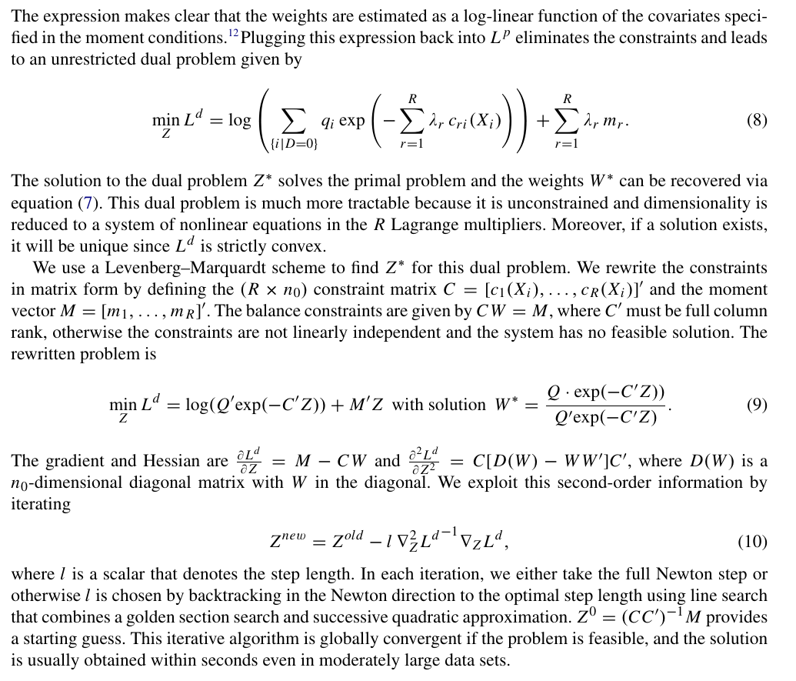

Renyi divergence weights for Causal Inference and Reweighting
Apoorva Lal
July 19, 2022
example.Rmd\(\DeclareMathOperator*{\argmin}{argmin}\) \(\newcommand{\var}{\mathrm{Var}}\) \(\newcommand{\epsi}{\varepsilon}\) \(\newcommand{\phii}{\varphi}\) \(\newcommand{\tra}{^{\top}}\) \(\newcommand{\sumin}{\sum_{i=1}^n}\) \(\newcommand{\sumiN}{\sum_{i=1}^n}\) \(\newcommand{\norm}[1]{\left\Vert{#1} \right\Vert}\) \(\newcommand\Bigpar[1]{\left( #1 \right )}\) \(\newcommand\Bigbr[1]{\left[ #1 \right ]}\) \(\newcommand\Bigcr[1]{\left\{ #1 \right \}}\) \(\newcommand\SetB[1]{\left\{ #1 \right\}}\) \(\newcommand\Sett[1]{\mathcal{#1}}\) \(\newcommand{\Data}{\mathcal{D}}\) \(\newcommand{\Ubr}[2]{\underbrace{#1}_{\text{#2}}}\) \(\newcommand{\Obr}[2]{ \overbrace{#1}^{\text{#2}}}\) \(\newcommand{\sumiN}{\sum_{i=1}^N}\) \(\newcommand{\dydx}[2]{\frac{\partial #1}{\partial #2}}\) \(\newcommand\Indic[1]{\mathds{1}_{#1}}\) \(\newcommand{\Realm}[1]{\mathbb{R}^{#1}}\) \(\newcommand{\Exp}[1]{\mathbb{E}\left[#1\right]}\) \(\newcommand{\Expt}[2]{\mathbb{E}_{#1}\left[#2\right]}\) \(\newcommand{\Var}[1]{\mathbb{V}\left[#1\right]}\) \(\newcommand{\Covar}[1]{\text{Cov}\left[#1\right]}\) \(\newcommand{\Prob}[1]{\mathbf{Pr}\left(#1\right)}\) \(\newcommand{\Supp}[1]{\text{Supp}\left[#1\right]}\) \(\newcommand{\doyx}{\Prob{Y \, |\,\mathsf{do} (X = x)}}\) \(\newcommand{\doo}[1]{\Prob{Y |\,\mathsf{do} (#1) }}\) \(\newcommand{\R}{\mathbb{R}}\) \(\newcommand{\Z}{\mathbb{Z}}\) \(\newcommand{\wh}[1]{\widehat{#1}}\) \(\newcommand{\wt}[1]{\widetilde{#1}}\) \(\newcommand{\wb}[1]{\overline{#1}}\) \(\newcommand\Ol[1]{\overline{#1}}\) \(\newcommand\Ul[1]{\underline{#1}}\) \(\newcommand\Str[1]{#1^{*}}\) \(\newcommand{\F}{\mathsf{F}}\) \(\newcommand{\ff}{\mathsf{f}}\) \(\newcommand{\Cdf}[1]{\mathbb{F}\left(#1\right)}\) \(\newcommand{\Cdff}[2]{\mathbb{F}_{#1}\left(#2\right)}\) \(\newcommand{\Pdf}[1]{\mathsf{f}\left(#1\right)}\) \(\newcommand{\Pdff}[2]{\mathsf{f}_{#1}\left(#2\right)}\) \(\newcommand{\dd}{\mathsf{d}}\) \(\newcommand\Normal[1]{\mathcal{N} \left( #1 \right )}\) \(\newcommand\Unif[1]{\mathsf{U} \left[ #1 \right ]}\) \(\newcommand\Bern[1]{\mathsf{Bernoulli} \left( #1 \right )}\) \(\newcommand\Binom[1]{\mathsf{Bin} \left( #1 \right )}\) \(\newcommand\Pois[1]{\mathsf{Poi} \left( #1 \right )}\) \(\newcommand\BetaD[1]{\mathsf{Beta} \left( #1 \right )}\) \(\newcommand\Diri[1]{\mathsf{Dir} \left( #1 \right )}\) \(\newcommand\Gdist[1]{\mathsf{Gamma} \left( #1 \right )}\) \(\def\mbf#1{\mathbf{#1}}\) \(\def\mrm#1{\mathrm{#1}}\) \(\def\mbi#1{\boldsymbol{#1}}\) \(\def\ve#1{\mbi{#1}}\) \(\def\vee#1{\mathbf{#1}}\) \(\newcommand{\Mat}[1]{\mathbf{#1}}\) \(\newcommand{\eucN}[1]{\norm{#1}}\) \(\newcommand{\lzero}[1]{\norm{#1}_0}\) \(\newcommand{\lone}[1]{\norm{#1}_1}\) \(\newcommand{\ltwo}[1]{\norm{#1}_2}\) \(\newcommand{\pnorm}[1]{\norm{#1}_p}\)
This package extends the functionality in ebal to a
larger set of divergence measures and accommodates a general set of
estimands.
The ebal package is restricted to computing ATT since it
expects a treatment vector and data matrix and solves for weights that
set the covariate means in the control group to those in the treatment
group. renyiWeights::entrBal expects a data matrix
X and a target means vector target, which can
accommodate a wide variety of estimands:
- treatment group mean for ATT
- overall sample mean for ATE
- subgroup means for CATE
- out-of-sample means for generalizability / survey reweighting
The weights it produces can then be used in a linear regression without covariates.
Renyi Divergence
Many problems involve reweighting a source sample \(\mathcal{S}\) to resemble a target sample \(\mathcal{T}\) by solving moment conditions. These problems can be cast into the following form:
\[ \text{min}_{w} D (w || d) \]
subject to balance constraints \[ \sum_{i : i \in \mathcal{S}} w_i c_{ri}(\mathbf{X}_i) = m_r(X_j) \text{ with } r \in 1, \dots, R \]
and normalization \[ \sum_{i : i \in \mathcal{S}} w_i = | \mathcal{S}| \]
Many candidate \(D(w || d)\) distance metrics exist. A popular one is the KL divergence, which is given by
\[ D_1(w || d) = \sum_{i \in \mathcal{S}} w_i \log (w_i / d_i) \]
Similarly, one may also choose
\[ D_2(w || d) = \log \left ( \sum_{i \in \mathcal{S}} w^2 /d_i \right) \]
These are both special cases of the Renyi family of divergences
\[ D(w || d) = D_\alpha(w || d) = \frac{1}{\alpha - 1} \log \left( \sum_{i \in \mathcal{S}} \frac{w_i^\alpha}{d_i^{\alpha - 1}} \right) \]
This package supports \(D_1, D_2\) and more are in progress (although \(D_1\) should suffice for most applications, especially since it is computationally attractive).
Entropy Balancing
The Entropy balancing section builds on Hainmueller(2012) and
accompanying r package ebal.
Entropy balancing for causal inference involves solving for balancing weights \(w_i\) that solves the following (convex) program
\[\begin{align*} \max_{\mathbf{w}} H(w) &= - \sum_{i : i \in \mathcal{S} } w_i \log w_i \\ \text{Balance constraints:} & \sum_{i : i \in \mathcal{S}} w_i c_{ri}(\mathbf{X}_i) = m_r(X_j) \text{ with } r \in 1, \dots, R \\ \text{Proper weights:} & \sum_{i : i \in \mathcal{S}} w_i = 1 \; \; \text{and } w_i \geq 0 \; \forall \; \{i: i \in \mathcal{S} \} \end{align*}\]
This convex program has \(R\) balance constraints that seek to equate functions \(c_{ri}(X_i)\) in a source sample \(\mathcal{S}\) to a target value \(m_r\). This primal problem has dimension \(n_0 + R + 1\).
Dual Formulation
Duality holds in the Lagrangian for the above problem and constraints can be substituted out. The solution for each weight is attained by
\[ w_i^* = exp \left( - \sum_{r =1}^R \lambda_r c_{ri} (\mathbf{X}_i) \right) \]
where \(Z = \{\lambda_1, \dots, \lambda_R\}'\) is a vector of Lagrange multipliers for the Lagrangian.
Relevant extract from Hainmueller (2012):

The dual Lagrangian has a much smaller dimension of \(R\) and can be solved fast using Newton’s method. We demonstrate the speed gains below in benchmarking.
Basics : computing Average Treatment effect on the Treated (ATT)
In the most straightforward example of entropy balancing, we seek to reweight control observations \(\{i: D_i = 0\}\) to match sample moments in the treated sample in order to compute \(\Exp{Y^1 - Y^0 | D = 1}\) where the second counterfactual mean \(\Exp{Y^0|D=1}\) is computed as a reweighted mean of the control group \(\sum_{i: D_i = 0} w_i Y_i\).
# %%
############################################################
# ATT
############################################################
data(lalonde.psid); setDT(lalonde.psid); df = lalonde.psid
yn = 're78'; wn = 'treat'; Xn = setdiff(colnames(df), c(yn, wn))
# rest of the code is generic
X = df[get(wn) == 0, ..Xn] |> as.matrix()
# treatment covariate means (for ATT)
target = colMeans2(as.matrix(df[get(wn) == 1, ..Xn]))
# solve for balancing weights (solves dual by default)
ω = entrBal(X, target)
# weighted regression (for robust standard errors)
regdf = rbind(
# treated obs : uniform weights
data.table(y = df[get(wn) == 1, get(yn)], w = 1, wt = 1 / sum(df[[wn]])),
# untreated obs : solved weights
data.table(y = df[get(wn) == 0, get(yn)], w = 0, wt = ω)
)
feols(y ~ w, weights = ~wt, data = regdf, vcov = "HC1")## OLS estimation, Dep. Var.: y
## Observations: 2,675
## Standard-errors: Heteroskedasticity-robust
## Estimate Std. Error t value Pr(>|t|)
## (Intercept) 3924.49 659.777 5.94821 3.0644e-09 ***
## w 2424.66 876.538 2.76618 5.7108e-03 **
## ---
## Signif. codes: 0 '***' 0.001 '**' 0.01 '*' 0.05 '.' 0.1 ' ' 1
## RMSE: 205.2 Adj. R2: 0.025064
Other Estimands: ATE
For the ATE, we need to reweight both treatment and control groups to equate covariate averages to the overall sample average.
# %%
############################################################
# ATE
############################################################
data(lalonde.exp); setDT(lalonde.exp); df = lalonde.exp
yn = 're78'; wn = 'treat'; Xn = setdiff(colnames(df), c(yn, wn))
X0 = df[get(wn) == 0, ..Xn] |> as.matrix()
X1 = df[get(wn) == 1, ..Xn] |> as.matrix()
# overall covariate means (for ATE)
target2 = colMeans2(as.matrix(df[, ..Xn]))
# solve for balancing weights - treatment obs
ω1 = entrBal(X1, target2)
ω0 = entrBal(X0, target2)
regdf = rbind(
# treated obs : uniform weights of 1
data.table(y = df[get(wn)== 1, get(yn)], w = 1, wt = ω1),
data.table(y = df[get(wn)== 0, get(yn)], w = 0, wt = ω0)
)
feols(y ~ w, weights = ~wt, data = regdf, vcov = "HC1")## OLS estimation, Dep. Var.: y
## Observations: 445
## Standard-errors: Heteroskedasticity-robust
## Estimate Std. Error t value Pr(>|t|)
## (Intercept) 4590.56 353.320 12.99265 < 2.2e-16 ***
## w 1571.81 689.266 2.28042 0.023057 *
## ---
## Signif. codes: 0 '***' 0.001 '**' 0.01 '*' 0.05 '.' 0.1 ' ' 1
## RMSE: 453.8 Adj. R2: 0.011074Speed comparison
library(microbenchmark)
microbenchmark(
eb_primal = {
eb_solve_primal(c(1, target), cbind(1, X))
},
eb_dual = {
eb_solve_dual( c(1, target), cbind(1, X))
},
qr_primal = {
qr_solve_primal(c(1, target), cbind(1, X))
},
times = 100L
)## Unit: milliseconds
## expr min lq mean median uq
## eb_primal 323.923267 331.831341 379.005292 339.889250 354.380031
## eb_dual 8.373995 8.533503 9.267221 8.719521 9.244629
## qr_primal 1439.743452 1740.925114 1839.687712 1758.990169 1833.185587
## max neval cld
## 732.00169 100 b
## 16.17057 100 a
## 2948.89522 100 cThe dual solver is much faster than the primal for EB.